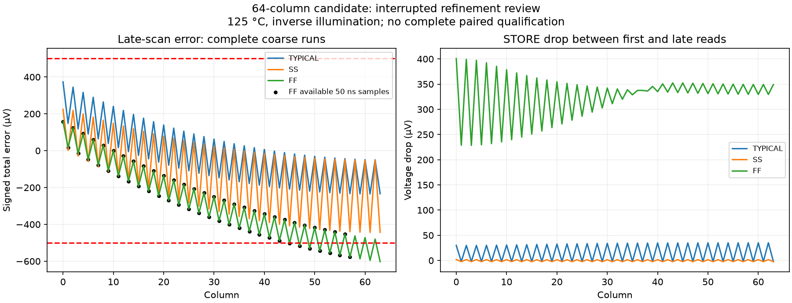

No simulation jobs remain active, and the sequence has not advanced. All three 100 ns runs and their 576 references completed. All three 50 ns runs hit the configured four-hour transient timeout near the end of the 3.98 ms schedule. The independent review validates the completed coarse evidence and available refinement prefixes; it does not count the missing samples as passes.
| MOS corner | Coarse total | Coarse tracking | Available fine samples | Worst available saved-node difference | Interpretation |
|---|---|---|---|---|---|
| TYPICAL | 391.959 | 39.582 | 125/128 | 0.252 | Coarse limits pass; full refinement incomplete |
| SS | 445.375 | 289.966 | 126/128 | 0.407 | Coarse limits pass; full refinement incomplete |
| FF | 602.413 | 3.476 | 122/128 | 0.102 | Above total-error limit |
The fast-corner issue is visible before the timeout: 7 available fine samples exceed 500 µV against the same matched coarse capture references used by the normal paired audit. The largest available fine error is 577.376 µV. This supports investigating the remaining capture/storage error; raising the runtime limit alone does not establish a passing design.
The slow and typical coarse measurements are within their limits, but their complete refinement checks remain pending. The fine traces end at 3.862–3.932 ms; 373 of 384 sample instants are available. No missing values are extrapolated. Coarse fast-corner worst total error is 602.413 µV at late column 63, with only 3.476 µV maximum output tracking error. The settled-state change includes storage and supply/bias changes; its exact cause requires further diagnosis.

Next: diagnose and reduce the remaining fast-corner retention/capture error, then rerun the corrected full-bank candidate with a longer transient watchdog and a reviewed concurrency limit. Preserve completed references and interrupted traces; they are useful evidence but cannot turn incomplete pairs into passes. Later process/pattern stages remain blocked by this review.
Independent evidence review · Original stopped-controller status. The timeout belongs to the per-transient runner: outer job records correctly show exit code 1 rather than their own timeout flag. All original pinned sources and prior commits remain intact.